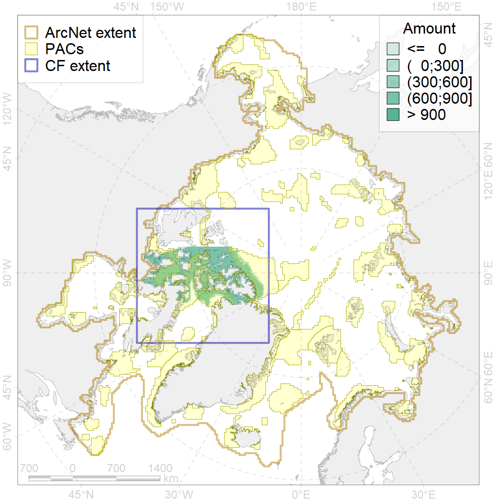
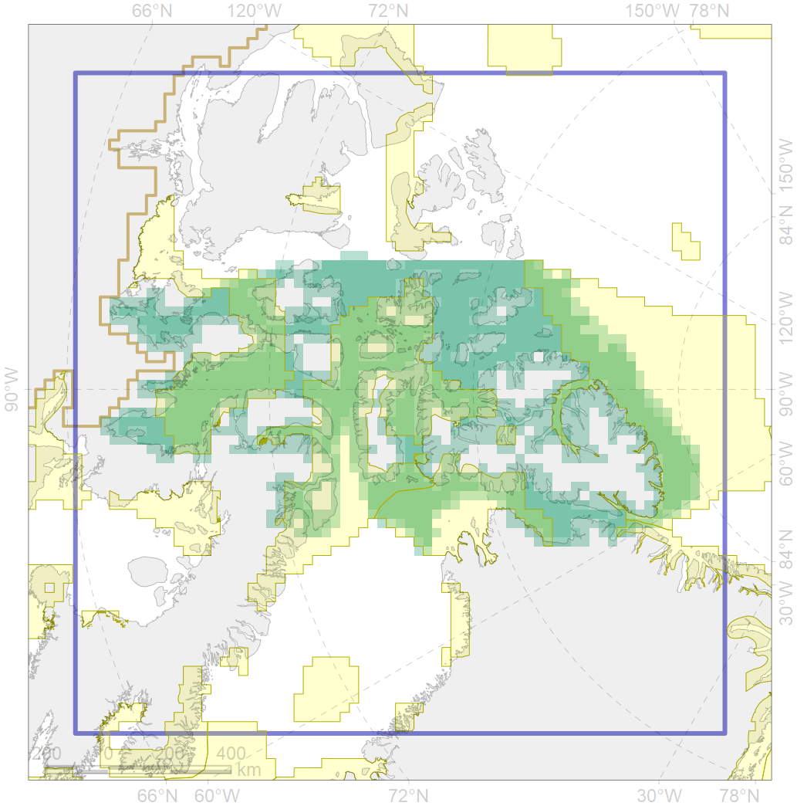

7021

| CF code | 7021 |
| CF name | Eastern Canadian Archipelago region |
| Time Period | 1900-2010 |
| Source(s) | Spiridonov et al., in prep. |
| Seasonality | 1-12 |
| Depth Horizon | Sea floor |
| Methodology | Boundaries derived from biogeographic regionalization scheme, which is in preparation for publication |
| Use Restrictions | Not for public use prior to publication (expected in early 2020) |
| Author Name | V. Spiridonov |
| Notes | |
| Scenario’s Target | 0.09702027 |
| Target Achievement | 0.584 (Scenario: 601.5%) |
| PAC | Share of the Total Amount within the PAC | Share of the Target Achievement for the ArcNet | PAC’s Contribution to the Target Achievement |
|---|---|---|---|
| 33 | 0.2%0.4% | 2.4%3.8% | 0.4%0.6% |
| 51 | 7.4%8.5% | 74.5%85.6% | 12.4%14.2% |
| 52 | 20.7%21.8% | 201.0%211.7% | 33.4%35.2% |
| 53 | 0.2%0.2% | 1.1%1.2% | 0.2%0.2% |
| 54 | 15.3%16.4% | 157.6%169.2% | 26.2%28.1% |
| 65 | 13.6%13.6% | 125.8%126.2% | 20.9%21.0% |
| inner | 57.3%60.9% | 562.5%597.7% | 93.5%99.4% |
| outer | 42.7%52.6% | 39.0%135.2% | 6.5%22.5% |
| † supplement values are for area consistence whereas principal values are for Accenter compatible gridded stats |